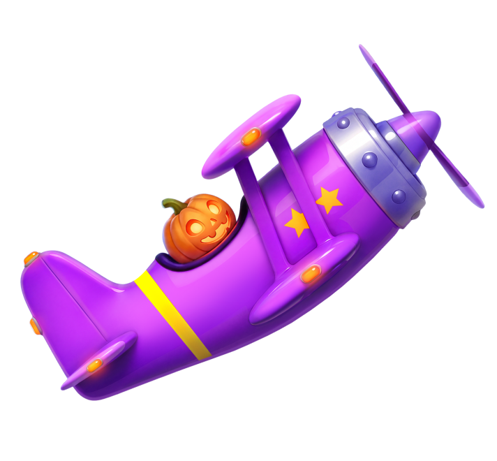

Aviamasters 2 Halloween - RTP, reseña y dónde jugar

| Proveedor | BGaming |
|---|---|
| Tipo de juego | Juego casual (estilo crash) |
| Tema | Aviación de Halloween |
| RTP | 97,00% |
| Móvil | Sí |
Resumen
Un piloto con cabeza de calabaza despega hacia cielos encantados mientras los fantasmas cruzan la ruta de vuelo, listos para interrumpir el viaje.
Aviamasters 2 Halloween es la edición de Halloween del éxito casual Aviamasters 2 de BGaming, lanzada el 15 de octubre de 2026. Es un juego estilo crash más que una tragamonedas tradicional: defines tu apuesta, el avión despega por una ruta aleatoria y la ronda solo paga si el avión aterriza en una isla en lugar de caer en el mar.
BGaming publica el RTP en 97,00% con volatilidad media-baja. El multiplicador máximo es de 1.000x la apuesta, con un tope de 250.000 EUR por premio individual.
La edición de temporada reemplaza al piloto con una cabeza de calabaza, cambia los cohetes por fantasmas y convierte el potenciador Nitro en Nitro Potion. Hay cuatro potenciadores a bordo: Magnet, Laser Gun, Nitro Potion y Life Buoy. Safe Landing cuesta 50x la apuesta por ronda y garantiza un aterrizaje ganador.
Dónde jugar Aviamasters 2 Halloween
Aviamasters 2 Halloween está disponible en casinos online que ofrecen juegos de BGaming. Empieza con nuestras listas verificadas:
Preguntas frecuentes sobre Aviamasters 2 Halloween
¿Cuál es el RTP de Aviamasters 2 Halloween?
BGaming publica el RTP de Aviamasters 2 Halloween en 97,00%. El juego usa un modelo matemático fijo, por lo que la cifra no cambia entre casinos.
¿Cómo se juega a Aviamasters 2 Halloween?
Define tu apuesta y el avión despega por una ruta de vuelo aleatoria. La ronda solo paga si el avión aterriza en una isla; si cae en el mar, pierdes la apuesta. Potenciadores como Magnet, Laser Gun, Nitro Potion y Life Buoy pueden cambiar cada ronda, y Safe Landing garantiza un aterrizaje ganador por 50x la apuesta.
¿Cuál es el premio máximo en Aviamasters 2 Halloween?
El multiplicador máximo es de 1.000x la apuesta, y BGaming limita cada premio individual a 250.000 EUR.
¿Aviamasters 2 Halloween funciona en el móvil?
Sí. Como todos los lanzamientos de BGaming, Aviamasters 2 Halloween funciona en el navegador de teléfonos y tabletas, sin necesidad de descargar nada.